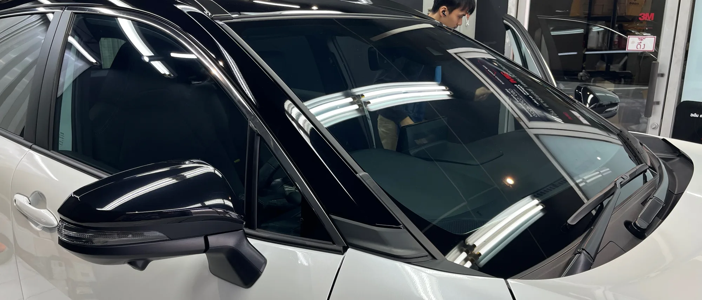
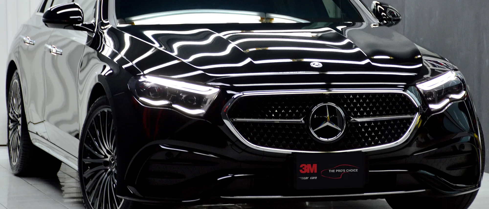
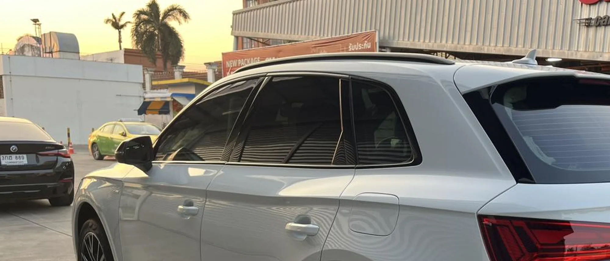
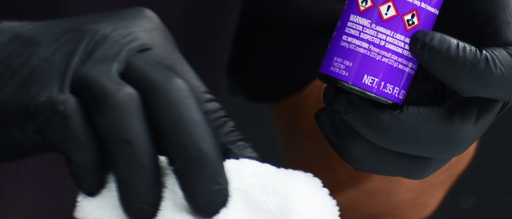
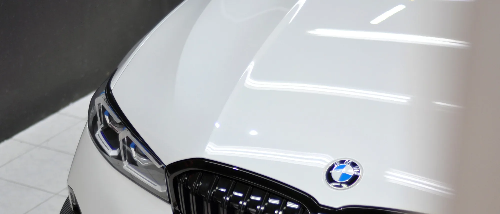
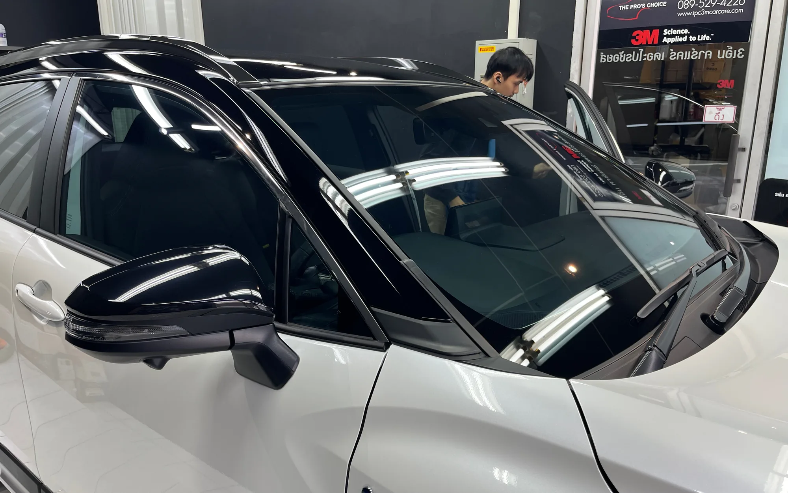
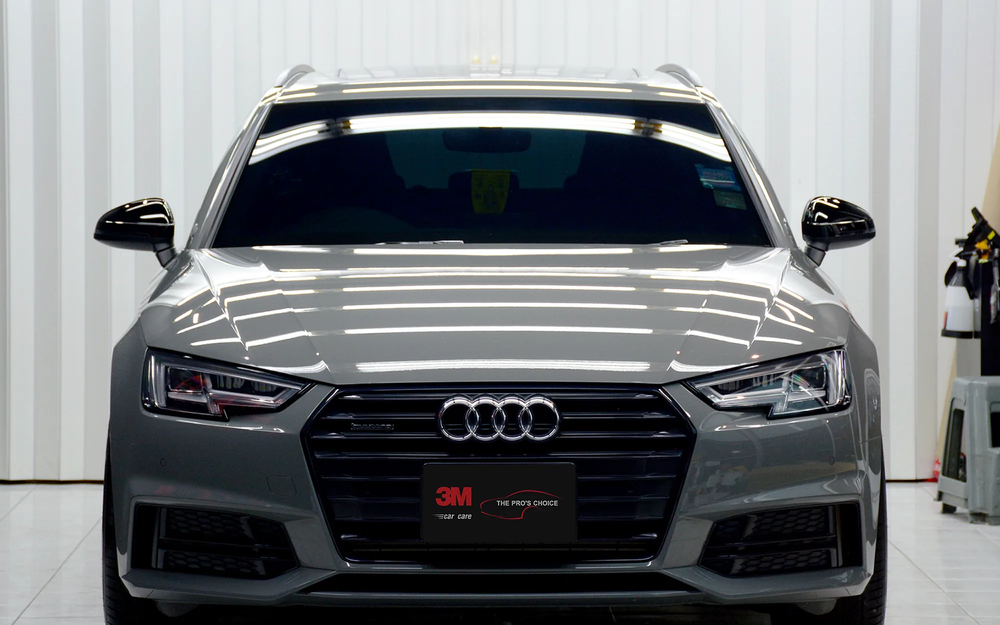
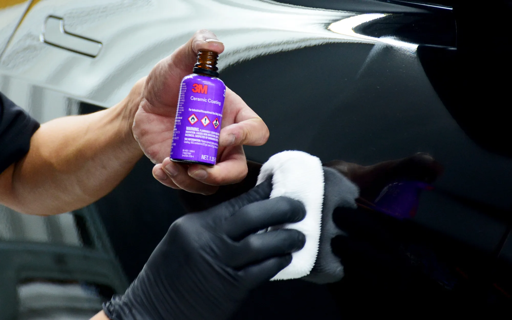

บริการแนะนำ
เลือกเริ่มจากบริการที่เหมาะกับรถของคุณ
บางคันต้องการลดความร้อน บางคันต้องการปกป้องผิวสี และบางคันต้องการวางระบบดูแลระยะยาวตั้งแต่ต้น
ข้อมูลก่อนเข้ารับบริการ
ติดต่อสะดวก เข้ารับบริการได้ชัดเจน
เวลาทำการ
เปิดบริการ 08:00–19:00 น. และหยุดทุกวันอังคาร กรุณานัดหมายล่วงหน้าเพื่อจัดคิวงานได้เหมาะสม
การเข้ารับบริการ
รองรับทั้งการนัดหมายล่วงหน้าและ walk-in ตามคิวงานของแต่ละวัน โดยงานที่ต้องใช้เวลาแนะนำให้จองคิวก่อน
ทำเลของร้าน
ให้บริการในโซนราชพฤกษ์ / ตลิ่งชัน เดินทางสะดวกสำหรับลูกค้าที่อยู่ฝั่งตะวันตกของกรุงเทพฯ และพื้นที่ใกล้เคียง
การนัดหมายและการเข้ารับบริการ
เลือกรูปแบบการเข้ารับบริการให้เหมาะกับงาน
งานบางประเภทสามารถเข้ามาสอบถามหน้างานได้ แต่สำหรับงานที่ต้องใช้เวลา หรือต้องเตรียมพื้นที่ติดตั้งล่วงหน้า การนัดหมายก่อนจะช่วยให้จัดคิวและวางแผนงานได้เหมาะสมกว่า
Booking
เหมาะกับงานติดฟิล์ม ฟิล์มใสกันรอย PPF เคลือบเซรามิก และงานที่ต้องใช้เวลาหลายชั่วโมงหรือหลายวัน
Walk-in
สามารถเข้ามาสอบถามหน้างานหรือรับการประเมินเบื้องต้นได้ตามคิวของวัน แต่บางบริการอาจต้องนัดหมายเพิ่มเติมก่อนเริ่มงานจริง
ประเมินก่อนทำ
ลูกค้าสามารถส่งรุ่นรถ รูปสภาพรถ และสิ่งที่ต้องการมาก่อนได้ เพื่อให้ร้านช่วยแนะนำแนวทางที่เหมาะสมก่อนเข้ารับบริการ
ความน่าเชื่อถือของเรา
มาตรฐานที่ลูกค้ามองเห็นได้ตั้งแต่เริ่มต้น
3M Authorized Dealer
ติดตั้งผลิตภัณฑ์ 3M ตามมาตรฐานของผู้ผลิต และให้คำแนะนำบนพื้นฐานของการใช้งานจริง
ประสบการณ์กว่า 13 ปี
ดูแลรถหลากหลายประเภท ทั้งรถใช้งานประจำวัน รถใหม่ และรถที่เจ้าของให้ความสำคัญกับสภาพผิวเป็นพิเศษ
ห้องติดตั้งควบคุมฝุ่น
ช่วยให้ขั้นตอนการติดตั้งและการทำงานมีความสม่ำเสมอ ลดความเสี่ยงจากสิ่งปนเปื้อนในงาน
Warranty Support
รับประกันตามมาตรฐานของผลิตภัณฑ์และโปรแกรมที่เลือก พร้อมแนวทางดูแลต่อหลังส่งมอบ
มาตรฐานและการพัฒนาอย่างต่อเนื่อง
ความน่าเชื่อถือไม่ได้มาจากคำโฆษณาเพียงอย่างเดียว
นอกจากการเป็น 3M Authorized Dealer เรายังให้ความสำคัญกับการอบรม การอัปเดตความรู้ของผลิตภัณฑ์ และการทำงานตามมาตรฐานที่ตรวจสอบได้
เปิดให้บริการตั้งแต่ปี 2013
ประสบการณ์การดูแลรถต่อเนื่องในงานใช้งานจริง ช่วยให้คำแนะนำมีพื้นฐานจากสถานการณ์หน้างานจริงมากกว่าทฤษฎีเพียงอย่างเดียว
การอบรมผลิตภัณฑ์ 3M
ทีมงานให้ความสำคัญกับการเรียนรู้ผลิตภัณฑ์ การติดตั้ง และการใช้งานที่ถูกต้อง เพื่อให้ผลลัพธ์ของงานมีความสม่ำเสมอ
มาตรฐานงาน PPF และงานปกป้องผิวสี
ความเชี่ยวชาญในงานปกป้องพื้นผิวไม่ได้อยู่ที่การติดตั้งเพียงอย่างเดียว แต่รวมถึงการประเมินพื้นผิว การเตรียมผิว และการดูแลต่อหลังส่งมอบ
ระบบการดูแลรถของเรา
ไม่ได้แยกเป็นงานย่อย แต่คิดเป็นระบบทั้งคัน
การดูแลรถที่ดีไม่ใช่การทำบริการทีละอย่าง แต่คือการวางระบบที่เหมาะกับการใช้งานจริงของรถแต่ละคัน
Surface Preparation
การเตรียมพื้นผิวและปรับสภาพก่อนเริ่มการปกป้อง เพื่อให้ทุกระบบทำงานบนพื้นผิวที่พร้อมจริง
Protection System
เลือกโปรแกรมปกป้องที่เหมาะกับลักษณะการใช้งาน เช่น ฟิล์มกรองแสง PPF หรือ Ceramic Coating
Maintenance Program
ดูแลต่อหลังการติดตั้ง เพื่อรักษาผลลัพธ์และทำให้สภาพรถคงอยู่ในมาตรฐานที่ควบคุมได้
เริ่มจากสิ่งที่รถของคุณกำลังเจอ
รถของคุณกำลังต้องการอะไร
รถร้อน ขับกลางแดดบ่อย
ติดฟิล์มกรองแสง 3M เพื่อลดความร้อน แสงสะท้อน และทำให้การใช้งานทุกวันสบายขึ้น
รถใหม่ อยากปกป้องตั้งแต่วันแรก
เริ่มด้วย Ceramic Coating หรือ PPF ตามระดับการปกป้องที่ต้องการ เพื่อวางระบบดูแลตั้งแต่ต้น
กลัวหินดีด หรือรอยจากการใช้งาน
ฟิล์มใสกันรอย PPF ช่วยปกป้องผิวสีจากแรงกระแทกในจุดที่มีความเสี่ยงสูง
สีรถหมอง มีรอยขนแมว
Paint Correction ช่วยฟื้นฟูสภาพผิว ก่อนเข้าสู่ระบบปกป้องที่เหมาะสมในขั้นต่อไป
บริการหลักของเรา
เลือกบริการตามสิ่งที่รถของคุณต้องการ

ฟิล์มกรองแสง
3M Crystalline และ Ceramic IR Series สำหรับการใช้งานที่ต้องการทั้งความสบายและความชัดเจนในการมองเห็น

ฟิล์มใสกันรอย PPF
ระบบปกป้องผิวสีจากแรงกระแทกและรอยจากการใช้งาน สำหรับรถที่ต้องการการปกป้องสูงกว่าเดิม

เคลือบเซรามิก
ระบบดูแลผิวสีให้ล้างง่าย ดูแลง่าย และรักษาภาพรวมของรถในระยะยาว

ขัดปรับสภาพผิว
ฟื้นฟูพื้นผิวก่อนการปกป้อง เพื่อให้ระบบถัดไปทำงานบนผิวที่พร้อมจริง
บริการยอดนิยมของลูกค้า
เริ่มต้นได้จากบริการที่คนส่วนใหญ่เลือกจริง
ฟิล์มกรองแสง 3M
เหมาะกับรถที่ต้องการลดความร้อนอย่างชัดเจน พร้อมภาพลักษณ์ที่สะอาดและสมดุลกับการใช้งานประจำวัน
Ceramic Coating
เหมาะกับรถใหม่และรถใช้งานจริงที่อยากให้ล้างง่าย ดูแลง่าย และวางระบบดูแลระยะยาวตั้งแต่ต้น
PPF จุดเสี่ยง
เหมาะกับลูกค้าที่ต้องการเริ่มปกป้องเฉพาะตำแหน่งสำคัญก่อน แล้วค่อยขยายขอบเขตงานในภายหลัง
งบประมาณเบื้องต้น
ช่วงราคาของบริการหลัก
การให้ลูกค้าเห็นระดับงบประมาณตั้งแต่ต้น ช่วยให้ตัดสินใจได้ง่ายขึ้น และเลือกบริการได้ตรงกับความต้องการจริง
ฟิล์มกรองแสง
เริ่มต้นประมาณ 7,000 – 25,000+ บาท ขึ้นอยู่กับรุ่นฟิล์มและประเภทของรถ
ฟิล์มใสกันรอย PPF
เริ่มต้นตามขอบเขตการติดตั้ง ตั้งแต่จุดเสี่ยงเฉพาะตำแหน่ง ไปจนถึงรอบคัน
เคลือบเซรามิก
เริ่มต้นประมาณ 9,900 บาท และปรับตามระดับโปรแกรม การเตรียมผิว และ maintenance program
ราคาจริงขึ้นอยู่กับรุ่นรถ ขนาดรถ สภาพพื้นผิว และขอบเขตของโปรแกรมที่เลือก
ตัวเลือกเริ่มต้นที่ลูกค้าเลือกบ่อย
เริ่มจากสิ่งที่เหมาะกับรถของคุณก่อนก็ได้
ไม่จำเป็นต้องเริ่มจากงานเต็มระบบเสมอไป ลูกค้าหลายคนเริ่มจากบริการเฉพาะจุดหรือโปรแกรมระดับเริ่มต้น แล้วค่อยขยับตามการใช้งานและงบประมาณที่เหมาะสม
ฟิล์มกรองแสงสำหรับรถใช้งานประจำวัน
เหมาะกับคนที่ต้องการลดความร้อนและยกระดับการใช้งานรถในชีวิตประจำวันแบบเห็นผลทันที
PPF เฉพาะจุดเสี่ยง
เหมาะกับผู้ที่ต้องการเริ่มปกป้องเฉพาะส่วนสำคัญก่อน เช่น กันชนหน้า ฝากระโปรง หรือจุดที่รับแรงกระแทกบ่อย
Ceramic Coating ระดับเริ่มต้น
เหมาะกับรถใหม่หรือรถใช้งานจริงที่ต้องการให้ล้างง่าย ดูแลง่าย และวางระบบดูแลพื้นฐานตั้งแต่ต้น
ขั้นตอนการเข้ารับบริการ
เข้ามาที่ร้านแล้วจะเจออะไรบ้าง
1. ปรึกษาและประเมินรถ
ดูสภาพรถจริงและทำความเข้าใจเป้าหมายของลูกค้า ก่อนเลือกแนวทางที่เหมาะสม
2. เลือกโปรแกรม
เลือกบริการและระดับโปรแกรมที่สัมพันธ์กับการใช้งาน งบประมาณ และผลลัพธ์ที่ต้องการ
3. เตรียมพื้นผิว
ล้าง ทำความสะอาด และปรับสภาพพื้นผิวตามมาตรฐานของงานแต่ละประเภท
4. ติดตั้ง / เคลือบ
ดำเนินงานตามขั้นตอนของผลิตภัณฑ์และระบบที่เลือก โดยคุมความสม่ำเสมอของงานทุกคัน
5. ตรวจงานและส่งมอบ
ตรวจสอบความเรียบร้อย พร้อมอธิบายแนวทางการดูแลหลังทำให้เข้าใจชัดเจน
ผลงานล่าสุด
ตัวอย่างงานที่เราดูแลจริง

ฟิล์มกรองแสง
งานติดตั้งสำหรับรถใช้งานจริงที่ต้องการทั้งความสบายและภาพลักษณ์ที่นิ่งสะอาด

ฟิล์มใสกันรอย
งานปกป้องจุดเสี่ยงและพื้นผิวหลักของรถ เพื่อรองรับการใช้งานระยะยาว

เคลือบเซรามิก
งานดูแลผิวสีที่เน้นความเรียบร้อย ความลื่น และความง่ายในการดูแลต่อ
เสียงจากลูกค้าของเรา
ความไว้วางใจจากลูกค้าจริง
รีวิวและประสบการณ์จากลูกค้าที่เข้ามาใช้บริการจริง คือหนึ่งในสิ่งที่สะท้อนมาตรฐานของร้านได้ดีที่สุด
Google Review
คะแนนรีวิวจากลูกค้าจริงบน Google ช่วยสะท้อนทั้งคุณภาพงาน การบริการ และความสม่ำเสมอของประสบการณ์
ลูกค้ากลับมาใช้บริการต่อ
ทั้งงาน maintenance งานรถคันใหม่ และการต่อยอดบริการเพิ่มเติม เป็นสัญญาณของความเชื่อมั่นระยะยาว
ความสะดวกระหว่างเข้ารับบริการ
นอกจากงานที่ดี ลูกค้ายังควรได้รับประสบการณ์ที่สบายขึ้น
แนะนำให้นัดล่วงหน้า
ช่วยให้ร้านจัดเวลาและขอบเขตงานได้เหมาะสม โดยเฉพาะงานที่ใช้เวลาหลายชั่วโมงหรือหลายวัน
รองรับทั้ง Booking และ Walk-in
ลูกค้าสามารถเข้ามาสอบถามหน้างานได้ แต่บริการที่ใช้เวลาและต้องเตรียมพื้นที่ล่วงหน้า แนะนำให้นัดหมายก่อน
พื้นที่นั่งรอและการใช้งานพื้นฐาน
เหมาะสำหรับลูกค้าที่ต้องการนั่งรอระหว่างงานระยะสั้น พร้อมสิ่งอำนวยความสะดวกพื้นฐานสำหรับการใช้งานระหว่างรอ
ทำเลใช้งานง่าย
เหมาะกับลูกค้าในโซนราชพฤกษ์ ตลิ่งชัน และพื้นที่ใกล้เคียง รวมถึงมีสิ่งอำนวยความสะดวกรอบร้านให้วางแผนเวลาได้ง่ายขึ้น
เริ่มต้นจากการประเมินที่ถูกต้อง
ยังไม่แน่ใจว่ารถของคุณควรเริ่มที่บริการไหน
แจ้งรุ่นรถ อายุการใช้งาน และสิ่งที่คุณต้องการกับเราได้ เราจะช่วยแนะนำโปรแกรมที่เหมาะกับรถของคุณอย่างตรงไปตรงมา
ปรึกษา / นัดหมายการติดต่อและการเดินทาง
เข้ารับบริการได้อย่างไร
ช่องทางติดต่อ
LINE, โทรศัพท์, Facebook และช่องทางออนไลน์ของร้าน เพื่อสอบถามข้อมูล นัดคิว หรือส่งรูปรถเพื่อประเมินเบื้องต้น
แผนที่ร้าน
สามารถเปิดแผนที่และวางแผนการเดินทางได้จากหน้า Contact เพื่อความสะดวกก่อนเข้ารับบริการ
เวลาทำการ
เปิดบริการ 08:00–19:00 น. หยุดวันอังคาร และแนะนำให้จองคิวล่วงหน้าโดยเฉพาะงานที่ต้องใช้เวลา